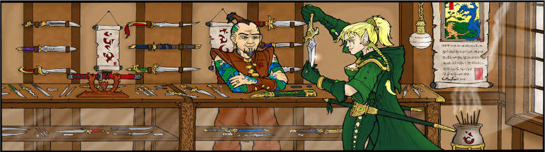
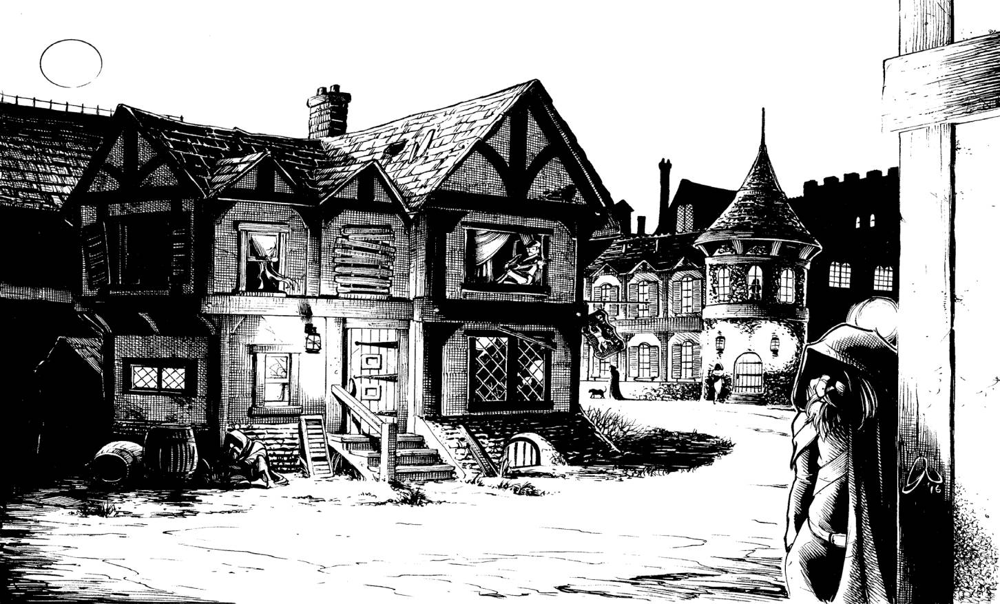
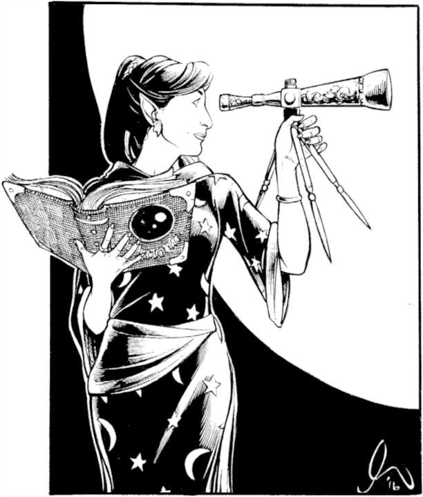
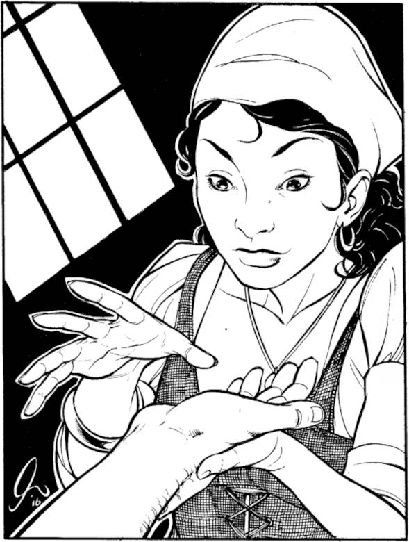

Folio #8. Módulo DF1
LA CORTE DE PÁTINA
Una Aventura para Personajes de Nivel 1-3
Vol. 1
Valoria, ciudad de Mythras
Gazetteer
Introducción
El sandbox de Mythras:
¿Cómo no voy a estar emocionado hoy por tener la primera oportunidad de presentar una aventura conjunta entre Dwarven Forge y Art of the Genre? Bueno, sinceramente sería imposible, ¡especialmente desde que pude jugar un poco a su sandbox! Esta unión de aventura y terreno surgió en la primavera de 2015, después de que Stefan, de Dwarven Forge, viera lo que estábamos haciendo con la serie The Folio y nos planteara la posibilidad de explorar su mundo de Mythras. Os diré que no dejé pasar la oportunidad porque sé muy bien que Stefan es un ávido jugador, y tener la oportunidad de sumergirme en su propio mundo y añadirle mis matices era demasiado bueno como para dejarlo pasar. Así que, tras más de medio año de desarrollo, os presento La Corte de Pátina, la primera de una trilogía de aventuras que darán cuerpo a un pequeño rincón de una de las épicas ciudades de Mythras, Valoria. Tomando fragmentos de Fritz Lieber, Robert E. Howard, Michael Moorcock e incluso un toque de H. P. Lovecraft, he fusionado la visión de Stefan de su fabulosa ciudad con lo que creo que mejor representa el sabor que todos buscáis. Juntos, hemos mezclado aspectos del terreno de Dwarven Forge con rápidas aventuras de espada y brujería, así como un inigualable arte de fantasía clásica, para ofreceros esta visión única de Valoria. Espero que disfrutéis de lo que hemos creado, y recordad que esto es sólo una guía, no un evangelio, así que sentíos libres de cambiar, adaptar y reutilizar, en vuestras propias campañas, todo lo que os guste de estas páginas.
Antecedentes de la Campaña
La Corte de Pátina:
Valoria es una ciudad vasta y dinámica de más de 50.000 habitantes. Sus distritos son únicos, variados y desempeñan un papel integral en su vibrante ecología, sin embargo, eso no quiere decir que cada manzana de sus murallas sea digna de mención. Cada calle es como una ola en un vasto océano, atrapada en un único momento. Algunas están en su punto álgido, rizándose en la rompiente, y aumentan el respeto de la ciudad. Otras han gastado su energía en una orilla arenosa, desangrándose en las profundidades hasta que, tal vez, vuelvan a surgir o se desvanezcan en la antigüedad.
Así es la historia de la Corte de Pátina. Antaño un orgulloso barrio situado al norte de la Calle Principal y al oeste del Camino de Odín, ahora, se ha convertido en una nota a pie de página olvidada en los anales de la historia de Valoria.
Hace dos siglos, cuando la nobleza construía fincas a lo largo de la Calle del Basilisco, en el Distrito Norte, un grupo de ciudadanos independientes y expertos en magia se trasladaron desde la Colina de los Magos para formar su propio barrio de élite, haciendo competencia directa a los mercados adinerados de Basilisco.
Con el oro obtenido de sus variados servicios arcanos, construyeron grandes casas y decoraron sus aleros con bronce importado de los gnomos de Urn. Con el paso de los años, los regios destellos de bronce adquirieron una pátina verde intenso, y así nació el nombre del barrio, la Corte de Pátina.
La magia, como la vida misma, es cíclica, por lo que el desgaste fue corroyendo poco a poco a los de Pátina. A diferencia de las familias nobles comunes que se empeñan en el matrimonio político y la herencia, los practicantes de magia de Pátina eran solitarios, excéntricos y, en muchos ambientes sociales, retrógrados. Se preocupaban más por el estudio intelectual que por la crianza de los hijos, por lo que después de varias generaciones el gran experimento de Pátina perdió su brillo al igual que ocurre con el bronce de los gnomos.
Las grandes casas se cerraban a medida que la magia se desvanecía de Pátina y el trasiego de ciudadanos de Valoria, antaño en busca de pociones, elixires, hechizos y encantamientos, también desaparecía. La Pátina se oscureció y cayó en el olvido.
Pasaron las décadas y las casas seguían en pie como duros recordatorios del orgullo, la riqueza e incluso la magia de sus creadores, ya que las estructuras rara vez se deterioraban, como si estuvieran vigilando para sus amos largamente perdidos.
Hoy Pátina, es poco más que un paraíso para los ocupas, un lugar donde muchos, sin esperanza, pueden encontrar algún refugio, o bien, para aquellos que desean perderse puedan desaparecer. No hay razón para venir aquí, salvo para aquellos que ya no están en este mundo, ya que la Funeraria de Múrtel se encarga de enterrar los cadáveres en criptas a los pies de la Colina de los Magos, en la frontera norte de Pátina.
Las bandas de pequeños delincuentes se esconden entre las antiguas fincas, y el Gremio de Mendigos mantiene una de estas estructuras como Casa del Gremio, aunque no haya ningún registro de la existencia del gremio. Aquí también se encuentra el Albergue del Brujo Caído, cuyos clientes son una mezcla ecléctica de personalidades, razas y edades sin un bolsillo digno para una posada como la del Brazo Agraciado en mitad de la calle Principal.
Ciertamente, otras personas siguen llamando hogar a la Corte de Pátina, desde la decrépita Casa de Baños de Relgar, hasta Alasia, la Astrónoma Dorada, última residente experta en magia. Pero incluso así, sólo los lugareños tienen conocimiento o se preocupan por ellos, y apenas despiertan el interés al sur de la calle Principal.
En verdad, no es un lugar que alguien elegiría visitar a menos que no tenga otra opción, haya fallecido o sea un creyente de los cuentos infantiles de tesoros mágicos ocultos bajo los cimientos de las antiguas casas.
Lugares de Interés
El Albergue del Brujo Caído:
Situada dos calles más atrás de la calle Principal, y más al este que la famosa posada del Brazo Agraciado, este edificio se ha convertido en el hogar de una ecléctica mezcla de peregrinos oprimidos y aspirantes. La mayoría se han mudado recientemente a Valoria, pero hay otros que han llamado hogar, durante varios años, a una pequeña habitación en el albergue. Dirigido por un viejo guardia de la ciudad llamado Alshock el Ahorrador. Este hombre rudo, adquirió el albergue por medios misteriosos, y muchos lugareños hablan de los tratos secretos que tiene con bandas y de los bienes ilícitos que se perdieron durante una redada que llenaron su cartera antes de su jubilación. Sea como fuere, Alshock es muy estricto, nunca le falta un garrote bien gastado y sólo permite el pago de las habitaciones el primer día de cada mes, de lo contrario, tú y tus cosas acabarán bruscamente en los adoquines al día siguiente.
Residentes destacados del Albergue del Brujo Caído:
Brimbold Elderman, la Alondra
Brimbold es un joven juglar de tierras desconocidas que se cree un bardo. Toca el laúd, tiene buena voz y conoce tres poemas épicos, pero por lo demás su mayor pasión es seducir a las damas locales para conseguir comidas gratis y baratijas que pueda vender a cambio de monedas para pagar su habitación.
Estaban Moncrief, el de la Palma Blanca
Oscuro como la pizarra pulida y tatuado con medio centenar de runas, Estaban es un curandero que trabaja con métodos mundanos más que con la mágica piadosa de las bendiciones divinas. A menudo se le encuentra en el Caldero Rancio, intercambiando remedios y pequeños tratamientos para dolencias menores por una trago. Antaño imbuido de espíritus, se le conoce por contar historias de desiertos profundos, demonios de fuego salvaje y caballeros que vuelan por los cielos despejados a lomos de caballos alados.
Lanka, la Sombra
Lanka es una semi-orca, pero lo que ella afirma es que la herencia de su padre elfo (de nuevo, difícil de creer) ha atemperado su lado orco hasta el punto de que algunos la consideran atractiva, aunque de un modo extraño. Domina tanto la lengua élfica como la orca, y tiene contactos con los clanes orcos que habitan fuera de los muros de Valoria. Gana dinero como exploradora, a menudo alejándose del albergue durante semanas, pero tiene su habitación pagada con tres meses de antelación para no perderla nunca. Algunos lugareños dicen que no sólo conoce los alrededores de la ciudad, sino también las alcantarillas y catacumbas que hay debajo.
Proprias, el Erudito
Enano de hombros rotos y barba delgada, Proprias se encuentra en sus últimos días, o eso es lo que la gente lleva diciendo desde hace toda una generación, y, sin embargo, sigue vivo. Las historias locales hablan de que Proprias es uno de los enanos que ayudan a cavar tumbas en la Colina de los Magos, en la frontera norte de Pátina, y a menudo se le ve haciendo el trayecto hasta la Funeraria de Múrtel, donde escribe honras fúnebres incluso para los muertos más humildes. Sea como fuere, no cabe duda de que Proprias ha vivido gran parte de la historia de la ciudad.
Cano, el Pícaro de la Bufanda
Cano es un humano enjuto, de hombros anchos y dedos tan largos como para rodear un melón maduro. No hay nadie que pueda decir que le haya visto la cara, ya que siempre lleva una bufanda negra, ni decir si se dedica a algo. En realidad, Cano perdió a su familia a manos de la violencia callejera de las bandas hace tres estaciones y ahora sale por la noche a las calles de Pátina para hacer justicia sobre los que no pueden tenerla. Con lo que les quita a sus víctimas paga su alojamiento y comida, y lo que no utiliza lo dona al Comedor de Prometeo.
El Caldero Rancio:
Si el Brazo Agraciado sirve a los que tienen buena posición a lo largo de la calle Principal, el Caldero Rancio es el hogar de los menos afortunados de Pátina. Bastante apartado del mapa, este antro sirve loa desechos del Brazo Agraciado (productos caducados y estropeados comprados por la puerta de atrás), principalmente, hirviéndola en espesos guisos. Más de un cliente se ha visto atado a un retrete tras una noche de estofado y cerveza en mal estado, pero aun así, la comida es barata y caliente, y ofrece, a quienes no desean prepararse su propia comida, un lugar donde reunirse y hablar de los acontecimientos diarios.
La Funeraria de Múrtel:
Sin duda el negocio más rentable de Pátina, y probablemente de la ciudad (la muerte nunca pasa de moda). Múrtel lleva más de trescientos años sirviendo a los muertos de Valoria. La funeraria suele utilizar un crematorio para atender a sus clientes, pero se sabe que los más adinerados son enterrados en las catacumbas de Múrtel, un lugar santificado tanto por Osiris como por Hades. También hay varias criptas en la superficie situadas en las laderas de la Colina de los Magos, donde los aristócratas ricos han comprado tumbas familiares, todas ellas mantenidas por las instalaciones de Múrtel. Actualmente dirigido por Brigit Múrtel, una joven de no más de treinta primaveras, heredó el negocio de su hermano mayor que se perdió en el mar mientras buscaba maderas y metales exóticos en Urn.
El Tercer Ojo de Abrella:
En Pátina hay una adivina de cierto renombre, y su tienda “El Tercer Ojo” suele ser el destino de quienes buscan presagios sobre su futuro. La mayoría de las veces se trata de almas en pena que buscan descubrir cónyuges infieles o socios estafadores, pero amantes, soñadores, empresarios e incluso miembros de bandas acuden, a veces, en busca de respuestas. Se discute mucho si Abrella tiene verdaderas dotes adivinatorias, pero tiene una red bien establecida de soplones, espías y fisgones que mantiene con monedas de cobre. La mayoría de los clientes coinciden en que la segunda lectura de Abrella es siempre mucho más interesante y específica que la primera.
La Casa de las Runas:
Babar Ikala, un antiguo marinero del Lago Dorado, es quien regenta un pequeño salón de tatuajes en Pátina, alejándose de la calle Principal. Es uno de los lugares favoritos de las bandas, hasta el punto de que cada una de ellas tiene su propio día de la semana dedicado a Babar, de lo contrario, el derramamiento de sangre estaría asegurado. El hombre, tiene un verdadero talento y ningún diseño es demasiado grande o pequeño. La gente de Pátina jura que la habilidad de Babar proviene de una bruja marina con la que se acostó hace mucho tiempo, o eso, o ha visto en sus viajes a la mayoría de criaturas tan extrañas que le piden los clientes que les coloque en la piel.
La Casa de Baños de Helicrium:
Situada en el lado norte de la Patina, esta antigua casa de baños sirvió antaño como punto de reunión para los expertos en magia del barrio. Algunos susurran que la magia de los antiguos clientes aún mantiene las aguas frescas y calientes, ya que en Pátina no se alza ninguna fuente termal. Sea como fuere, hace tiempo que el lugar está en ruinas, aunque el agua siga siendo buena, y ahora es poco más que una tapadera para que la Banda de Teller dirija un burdel clandestino. El Gremio Carnal exige costosos permisos para este tipo de actividades en la ciudad, pero aquí, lejos de la mirada pública, se pueden encontrar mujeres jóvenes que proporcionan “baños privados” a los clientes si dan buenas monedas.
La Casa de las Dagas Voladoras:
Ling Tuo, un hombre de ascendencia extranjera que sabe trabajar el metal, dirige la que muchos consideran la mejor tienda de dagas de Valoria en un pequeño local en lo más profundo de la Patina. Dado que la guardia de la ciudad no ve con buenos ojos llevar espadas, la mayoría de los ciudadanos preocupados por su protección personal llevan una honda o un puñal, y Tuo no tiene escasez de hojas cortas para aquellos que quieren ocultar un arma mortal. Sus precios son elevados, sobre todo para Pátina, pero su mercancía suele revenderse en puestos y tiendas de toda la ciudad, y más de un crimen violento ha llevado el rastro hasta su puerta.
La Sílfide Dorada de Isildred:
A los elfos siempre se les ha considerado de otro mundo, y a los de los bosques septentrionales de Mythras se les consideran, a veces, como leyenda, pero algunos llegan a Valoria. Isildred es una de ellos, una hembra de esa especie. Ha estado en Pátina desde su fundación y es la última de los constructores originales que mantiene su hogar ahí. Su casa, conocida por los lugareños como Agujas Blancas, está meticulosamente mantenida y proporciona una visión de la riqueza que Patina tuvo antaño. Es una maga conocida, y sin embargo, su devoción no es a las bolas de fuego ni a los rayos, sino que dedica su tiempo a estudiar las constelaciones como si buscara respuestas a alguna pregunta aún no formulada por ningún ciudadano del mundo de los humanos. Conocida por su belleza eterna, Isildred suele tener un amante cada medio siglo, engendrando a un único niño que cría sola. Sus hijos, que algunos dicen que hay más de una docena de medios elfos que la llaman madre, ocasionalmente pasan a verla, pero ninguno ha fijado su residencia permanente en Pátina.
El Comedor de Prometeo:
Dado que los habitantes de Pátina son el último escalón de la clase social antes de ser etiquetados como mendigos, la mayoría necesitan asistencia, especialmente en lo que respecta a la comida. Suelen ser familias numerosas debido a que la anticoncepción es desconocida para la mayoría. Para ayudar a combatir el hambre, el Templo de Prometeo, conocido por los lugareños como el Comedor de Prometeo, abre sus puertas cuatro días a la semana para que los lugareños coman gratis. comida. Durante estos pequeños festines, se dejan a un lado los odios entre bandas y las disputas familiares se quedan en casa. Las noches de festín son cuando Pátina más parece una comunidad, y ciertamente Prometeo es el dios más venerado entre el pueblo.
Notas y sugerencias para el Game Master
1. Dirigir Pátina
En primer lugar, todas las campañas de ciudad tienen una “sensación”, algunas son más de espada y brujería, otras de alta aventura, otras de fantasía oscura, etc. En el caso de Valoria, tenemos la sensación de ciudad europea estándar mezclada con los vestigios de Roma y Egipto, pero la verdadera necesidad del GM aquí es establecer el tono de Pátina. Lo que ocurra en los demás barrios o distritos de la ciudad no es de su incumbencia, sólo las ocho manzanas mal contadas que abarcan este mundo dentro de otro mundo. Cuando escribí Pátina, me apoyé mucho en los oprimidos, la magia ruinosa y la gente excéntrica que aún llama hogar a estos edificios. Al igual que en la anterior campaña de la Fortaleza de Roslof, en la Corte de Pátina es responsabilidad del GM crear relaciones entre los AJ y la red de ANJs preestablecidos, además de aquellos ANJs de tu propia creación, para convertir a los jugadores en verdaderos miembros de “la corte”. Este es el reto que te planteo.
2. Dirigir el misterio
El arco argumental del nº 8 de Folio será el misterio de los ojos negros, una raza de personas mapache creados mágicamente que han estado viviendo en las sombras durante más de cien años. Fueron creadas (¡como los pitufos!) por un usuario de la magia de Pátina para tener compañía, pero ahora han establecido su propia micro-sociedad que gira en torno a la obra de su creador ya fallecido hace mucho tiempo. Cada vez que ocurre algo extraño en Pátina, la gente suele murmurar: “Han sido ellos”, es decir, los ojos negros. Aún así, a la gente no le gusta hablar de esas criaturas, y muchos insisten en que estas personas mapache han sido fabricadas por las bandas para desviar la culpa de los delitos menores. Sea como sea, los jugadores tendrán momentos en los que “ellos” serán mencionados, y la búsqueda de la verdad ayudará a impulsar al grupo hacia los acontecimientos del nº 9 de Folio.
3. El albergue y los ANJ
Sugiero que los jugadores comiencen a jugar como entes independientes que, tras varias rachas de mala suerte, han acabado llamando hogar al Albergue del Brujo Caído, al menos temporalmente. Ya hay grandes y útiles ANJs en la casa, y es un gran punto de encuentro (¡aléjate de la manida y sobreactuada apertura de la campaña de “vale, estáis todos en una taberna”!) para los primeros escenarios. Todos los jugadores deberían necesitar monedas, ya que la ciudad no es barata, así que utilízalas como punto de apoyo.
4. Pistas de los Ojos Negros
Los ojos negros son la causa de un caos moderado dentro de Pátina, pero más recientemente sus robos se han vuelto más descarados (concretamente desde que la Banda de Teller ha tomado algo que los ojos negros necesitan para mantener el control de la otra creación de su amo, los Cerebros Saltarines. Esto pone a los ojos negros directamente en conflicto con la banda de Teller, y Rexa, líder de los Teller, cree que los ojos negros son los guardianes de una riqueza fuera de lo normal, oculta bajo las calles de Pátina. Al final, es probable que los jugadores se pongan del lado de los ojos negros, poniéndolos de esta forma directamente en el punto de mira de los Teller mientras cada uno compite por el premio final que se encuentra en el nº 10 de Folio.

5. Interacciones con la Banda de Teller
Esta es otra de las claves de la aventura. El GM debería usar a la Banda de Teller como un elemento para posicionar a los jugadores firmemente en un bando y a los Teller en el otro. Suponiendo que consigas que los jugadores se sientan comprometidos con la salud y la seguridad de Pátina, la utilización de “matones” para maltratar a los amigos de los jugadores y provocar así represalias, deberías asegurar no sólo que los jugadores se conviertan en “benefactores” de Pátina, sino que también tendrán que vigilar sus espaldas siempre que viajen. Esto los llevará a una mayor sensación de temor o tensión, algo que puede ser utilizado por ti como GM para añadir profundidad a la trilogía. Además, los Teller de menor rango son incultos, impulsivos y raramente entienden el concepto de consecuencia. Nunca debe suponer un problema sacrificar a algunos Teller en el altar de “hacer que los jugadores se sientan duros” ya que hay otros peligros en Pátina que deberían ser el verdadero desafío, al menos en el nº 8 de Folio.
Arcos e hilos argumentales generales
Semilla de Aventuras: Los jugadores desarrollarán su introducción durante esta aventura. Primero deberán establecer una base de operaciones en Pátina (probablemente el Albergue), después tendrán que encontrar algún tipo de empleo remunerado que les lleve a los escenarios “La Bodega Rancia” y “La Cripta Problemática”. Una vez que se hayan hecho de cierto renombre, se enterarán de varias desapariciones dentro de Pátina, y que algunos culpan a una o unas misteriosas criaturas, conocidas como “ojos negros”. Siguiéndoles la pista y enfrentándose a la banda de Teller, que también busca a estas criaturas, los jugadores se embarcarán en el escenario final “El alienista”.
Interpretar el dinero
Valoria tiene las monedas típicas de los mundos de fantasía, aunque existen algunos nombres distintivos de la ambientación. Dicho esto, una cosa que me gustaría dejar clara a los GMs es que los personajes (como en el juego de rol de Conan) deberán empezar sin dinero. Todo el que no se gaste en equipo se retira del juego, y a todos los personajes se les asignarán dos piezas de oro a cada uno. Esto limitará su capacidad para huir de la Corte de Pátina, y lo más probable es que se queden en el albergue, que es un buen lugar para empezar las cosas. Los costes de los bienes dentro de Pátina son los siguientes, sólo para que la gente pueda llevar la cuenta y saber lo que cuesta “ascender” en el mundo.
Habitaciones: El Brazo Agraciado 2 mo por noche por una habitación privada. 1 mo por noche por una habitación comunicaria. El Albergue del Brujo Caido 1 mo por semana por una habitación privada. 5 mp por semana por una habitación comunicaria.
Comidas: El Brazo Agraciado Más de 2 GP por comida. El Albergue del Brujo Caido 1 me por estofado 1 mp por estofado y pan 2 mp por estofado, pan y cerveza rancia
Además, no hay una gran cantidad de tesoros económicos en esta aventura. Esto se ha hecho así para que los personajes se mantengan “vivos y mezquinos”, ya que deben trabajar duro para ganar riqueza y posición dentro de Pátina.
La banda de Teller:
Operando como la banda más poderosa de Pátina, los Teller están dirigidos por un joven noble venido del Barrio Norte llamado Notorus Rexa. Ha utilizado su carisma y educación para ganarse a la antigua banda de Bryce Teller (asesinado por Rexa en un duelo con una espada envenenada), y ahora se cree “El Señor de la Corte de Pátina”.
Los Teller tienen ahora las manos metidas en muchos asuntos, desde la prostitución en la Casa de Baños de Helicrium hasta la extorsión, los pequeños robos y el juego, todo ello fuera de la vista de los distintos gremios de la ciudad. Rexa es lo bastante listo como para mantener sus intereses comerciales rentables pero que no destaquen, y también cuenta con una buena red de informadores que trabajan en Pátina y que pueden informarle de cualquiera que suponga una seria amenaza para su poder, es decir, los jugadores, o al menos eso teme.
En total, los Teller son más de treinta miembros, la mayoría inferiores a nivel 3, siendo la mayoría de la clase ladrón o guerrero. Rexa es un guerrero de nivel 5 con predilección por las espadas envenenadas.
Nuevo Monstruo
Cerebro Saltarín
Legal Maligno Frecuencia: Muy Raro Nº de Apariciones: 2-20 Clase de Armadura: 5 DG: 3 Movimiento: 10m (12") Nº de Ataques: 1 Daño/Ataque: 1-6 Ataques Especiales: Salto con Ataque Defensa especial: N/A Resistencia Mágica: Estándar Inteligencia: Mucha Tamaño: M Habilidad psiónica: N/A % en guarida: 15% Tipo de Tesoro: D
Salto con Ataque: Estas criaturas tienen la habilidad de saltar hacia un objetivo, morderlo y luego alejarse de un salto, impidiendo las represalias de los ataques cuerpo a cuerpo contra ellas. Para conseguirlo, los Cerebros Saltarines deben ganar la iniciativa. Si tienen éxito, sólo pueden ser atacados a distancia durante esa ronda, ya que se dedican a saltar por la zona siseando y mordiendo, pero nunca se quedan en un lugar el tiempo suficiente para acercarse a ellos.
Cada “manada” de Cerebros Saltarines tendrá un “Cerebro Líder” central que tiene los DG aumentados (a 8), también tiene un ataque “Frenético” que añade +2 al impacto y al daño si el Cerebro Líder se encuentra en los dominios de su amo en el momento del ataque.
Cerebro Saltarín [CA 15, Velocidad 30’, HD 3d8+6, HP 16, Inic: +2, #AT 1, Impacto +5, Mordedura de Presa 4 (1d6+1), Salto con Ataque (pueden atacar y alejarse saltando si tienen la iniciativa, lo que anula las represalias cuerpo a cuerpo de su víctima)].
Al igual que los ojos negros, estas criaturas son creaciones del famoso encantador Kalium Rosa. Mientras que los ojos negros fueron creados como compañeros, los Cerebros Saltarines eran más bien los perros guardianes de los diferentes tesoros del mago, sin embargo, cuando Rosa dejó este plano, los ojos negros se vieron obligados a hacerse cargo de los Cerebros Saltarines. Afortunadamente, Rosa creó un silbato encantado que puede someter a las criaturas, poniéndolas en un estado dócil. Después de que la banda de Teller asesinara al ojo negro que tenía el silbato y se llevara el artefacto, los Cerebros Saltarines se han despertado y han empezado a cazar sistemáticamente en Pátina por las noches.
Con un aspecto de algo más que un gran globo “cerebral” unido a dos patas delgadas y armado con unas fauces voraces, los Cerebros Saltarines son excelentes cazadores. Pueden saltar grandes distancias, comunicarse mediante telepatía limitada y utilizar una forma de ecolocalización para dibujar su entorno. Este talento hace que los Cerebros Saltarines emitan “chasquidos” inquietantes y regulares, así que piensa en sus ataques como en la música premonitoria de la película Tiburón…